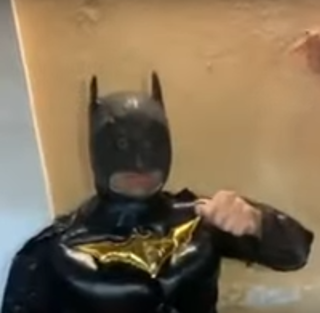

Curriculu Vitae de Bruce Wayne
Datos personales
- Nombre completo: Bruce Wayne
- Fecha de nacimiento: 1/5/1939
- Lugar de nacimiento: Gotham City
Formación académica
- 1956 - 1961: Universidad del Espantapájaros
- 1952 - 1956: Instituto de Dos Caras
- 1944 - 1952: Escuela Primaria del Joker
Experiencia Laboral
- 1957 - 1985: En el paro
- 1965 - 1975: Cazavillanos y demas chusma
- 1962 - 1975: Aprendiz de superhéroe

foto de Graduacion: Bruce Wayne